Batmobile
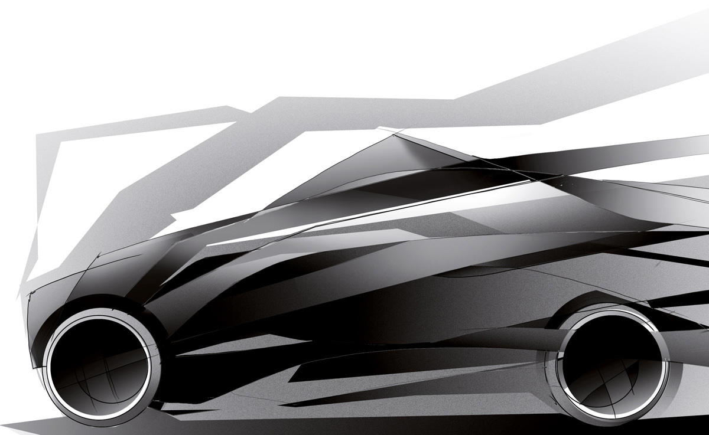
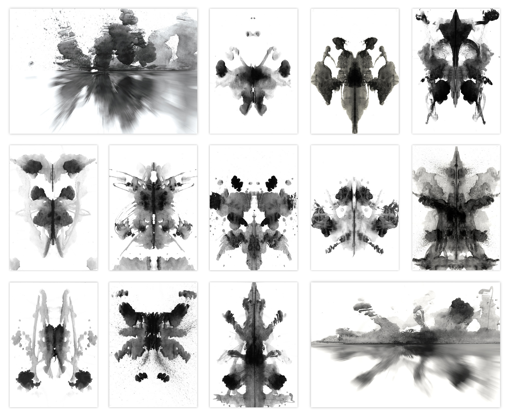
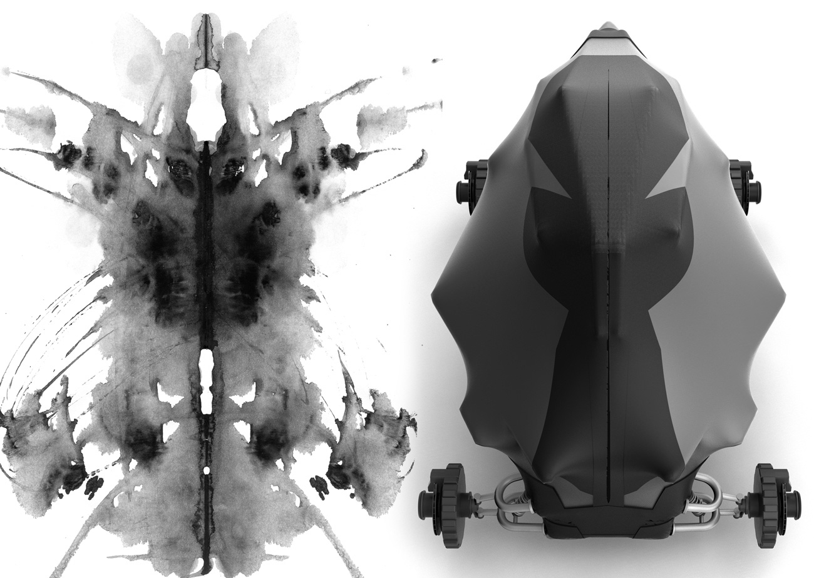
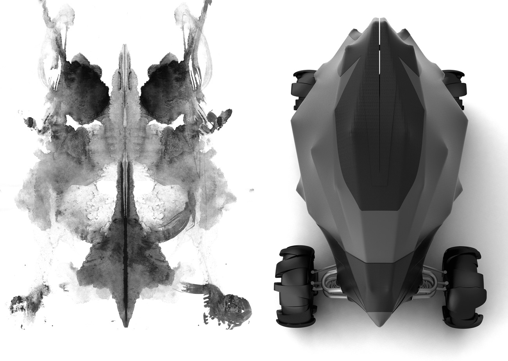
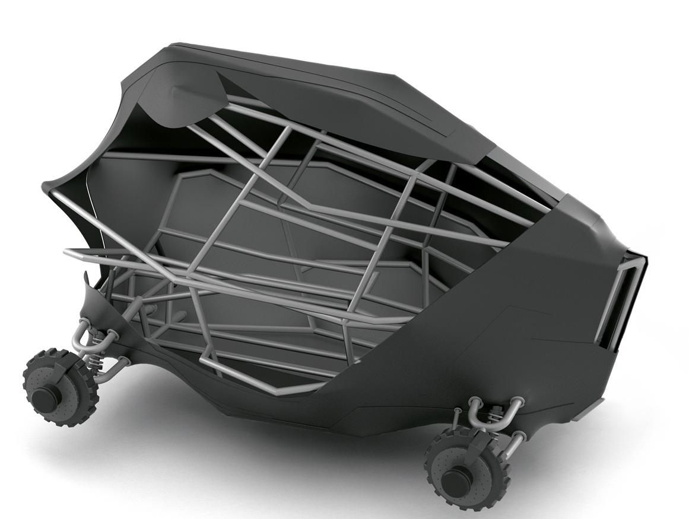
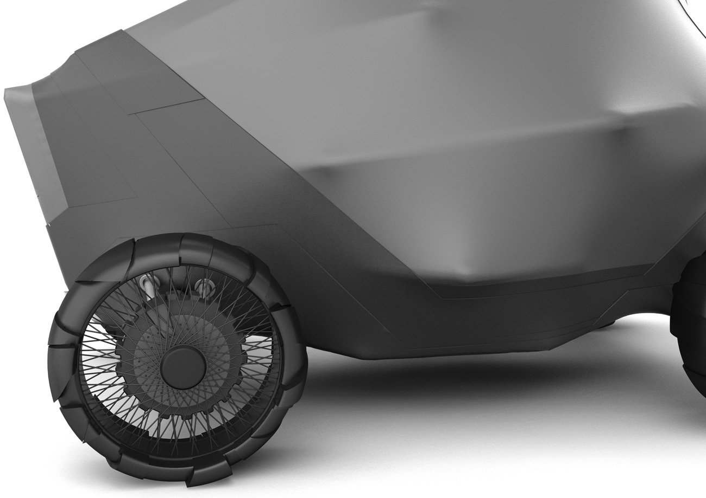
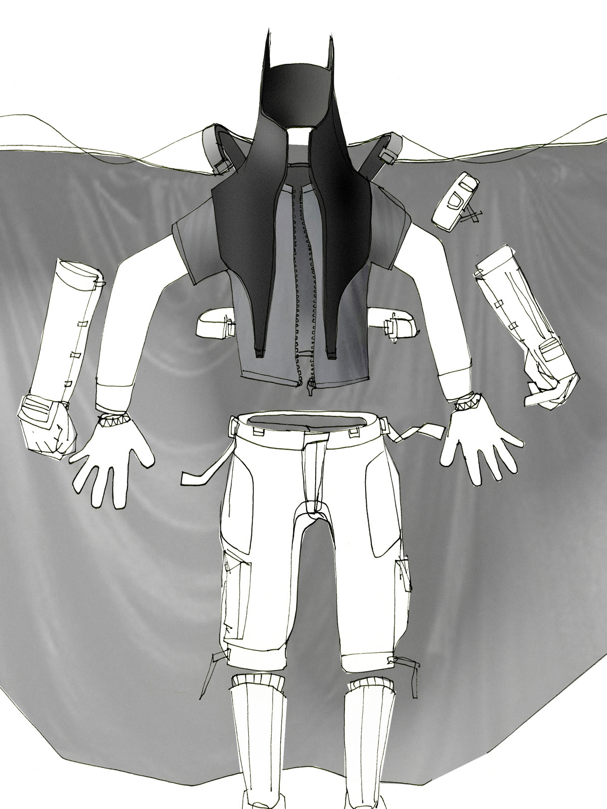
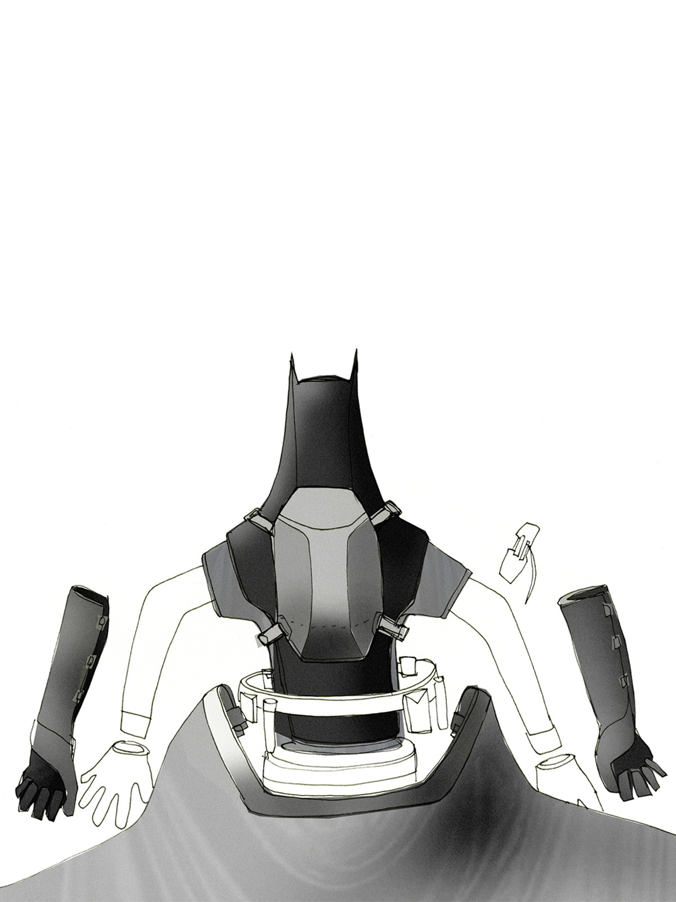
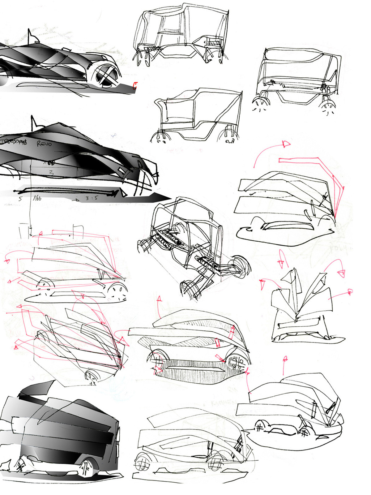
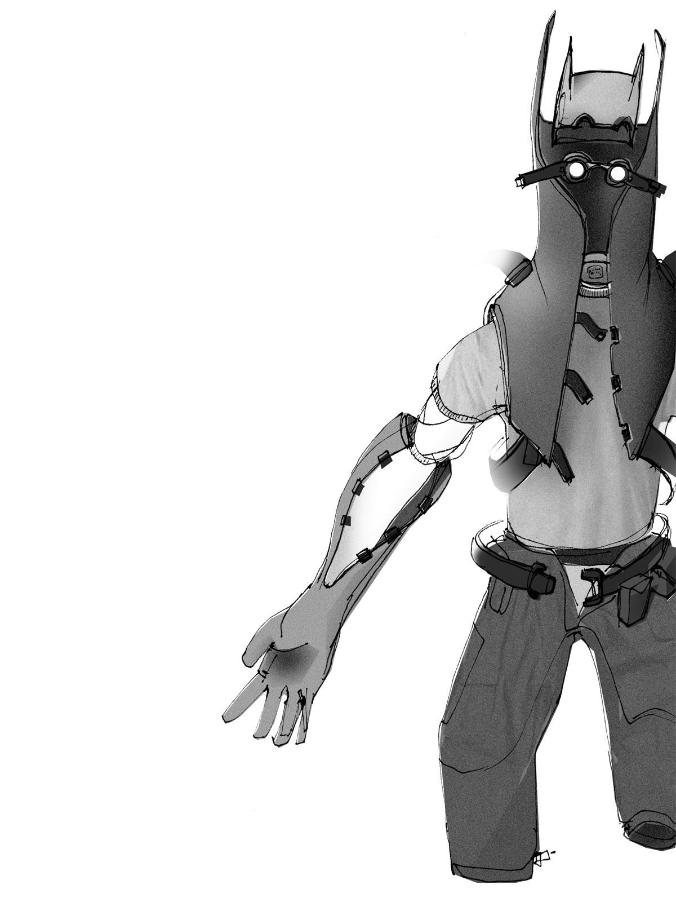
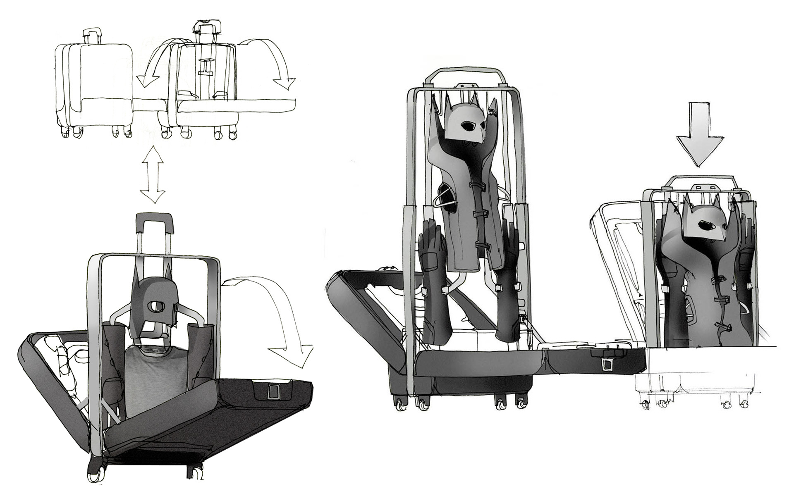
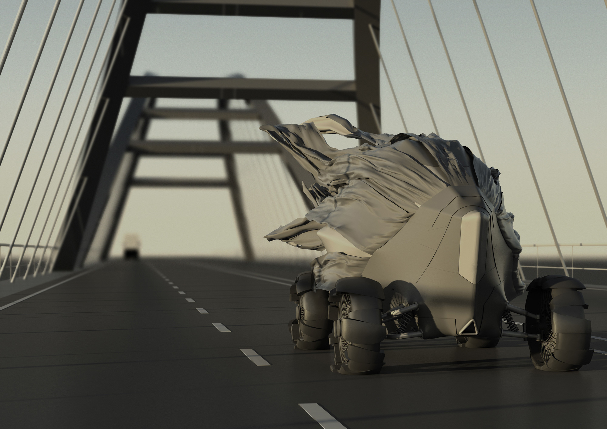
This is my degree project. Batman celebrated his 70th birthday in May 2009. Time for a new Batmobile! Weaponry, sheet metal and rocket drive are things of the past. The new Batmobile flutters through Gotham City under cover of darkness. For me it was important to create a design that fits Batmans character, that everybody recognizes as Batman's equipment. In the end I decided to create a radical Batmobile that is different from any other Batmobile from the last 70 years. The structure is based on a frame and a flexible hull. I created the surfaces by digitally stretching the hull over the frame. Then I added some reinforcements. The look of the hull is inspired by pretest vehicles and rorschach tests.
Meine Bachelorthesis. Im Mai 2009 feierte Batman seinen 70. Geburtstag. Zeit für ein neues Batmobil! Waffensysteme, Blech und Düsenantrieb gehören der Vergangenheit an. Das neue Batmobil flattert im Schutz der Dunkelheit durch Gotham City. Für mich war es wichtig ein Design zu finden, dass zu Batmans Charakter passt und das jeder als Batmans Ausrüstung erkennt. Am Ende entschied ich mich für ein radikales Konzept, dass sich von jedem Batmobil der letzten 70 Jahre unterscheidet. Es besteht aus einem Rahmen über den eine flexible Hülle gespannt ist. Die Form entstand somit durch eine Simulation der Hülle. Hinzu kommen einige Verstärkungen. Das Design lehnt an Erlkönige und Rorschachtests an.